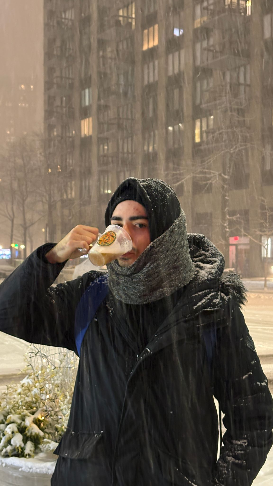
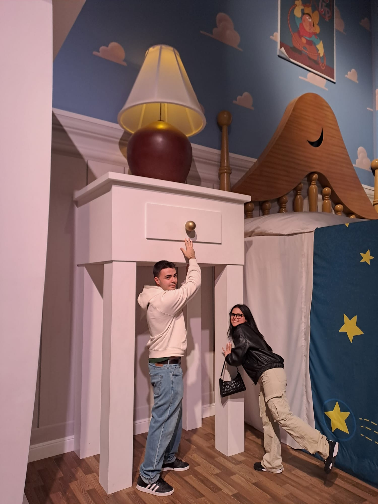
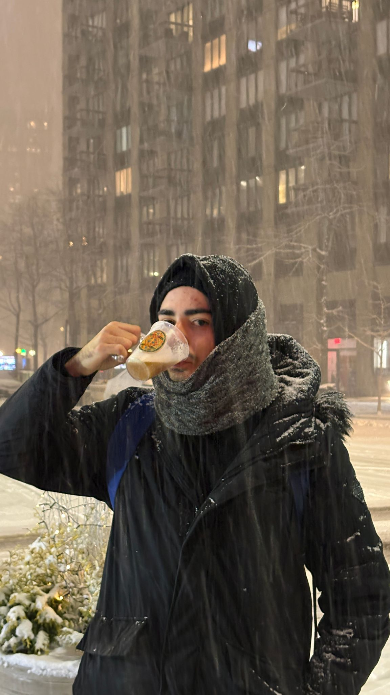
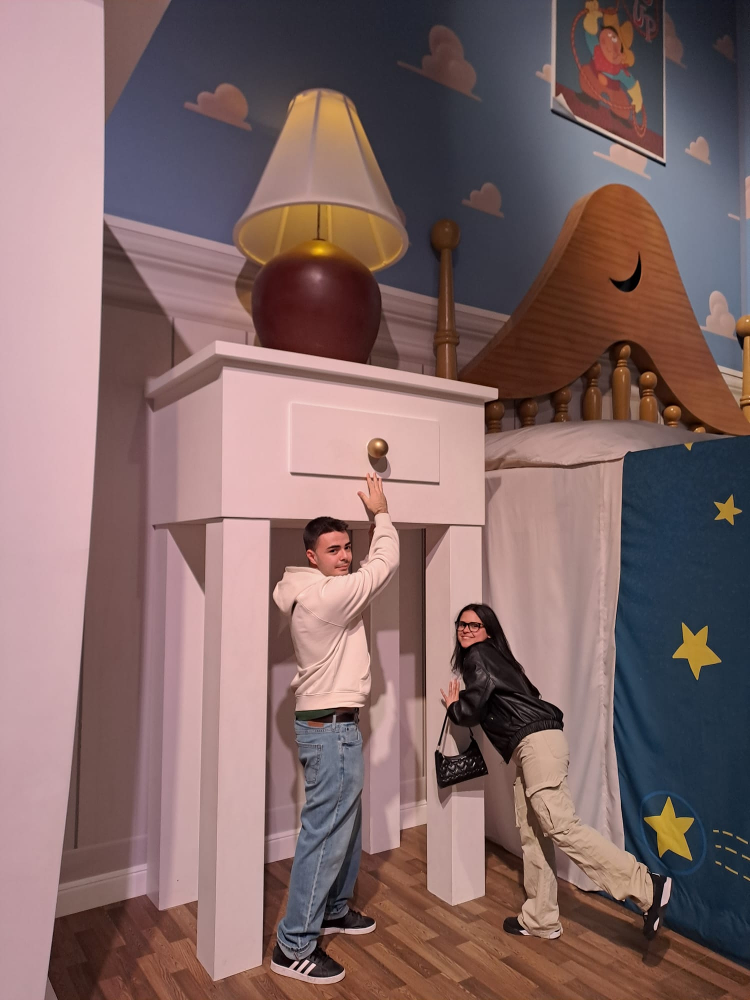
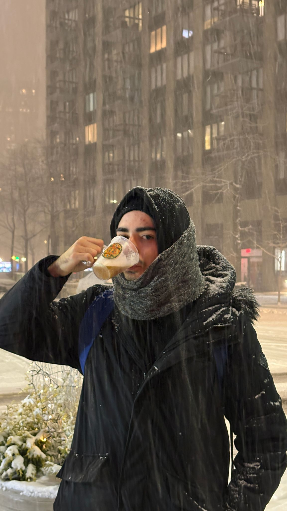
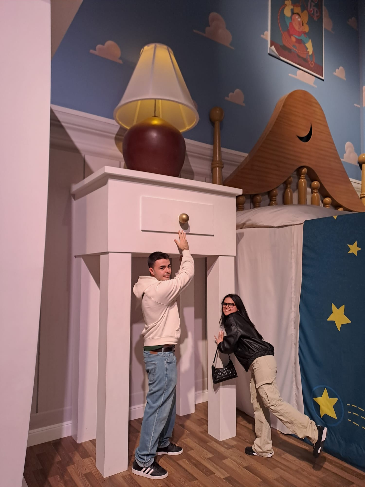
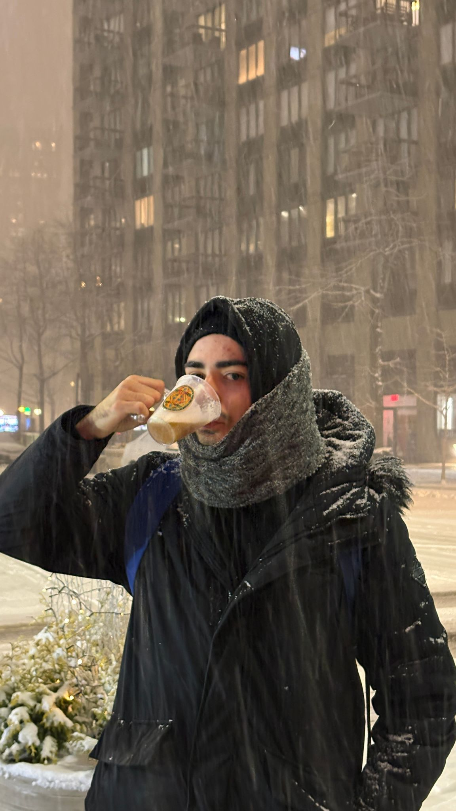
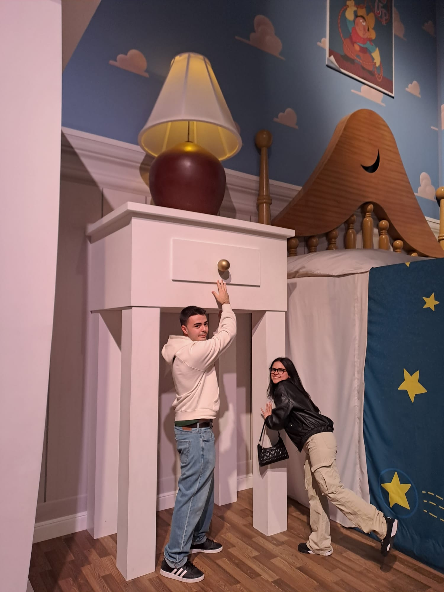

Me llamo Gerard Chaparro Redondo, tengo 22 años y nací el 22 de abril de 2003.
Vivo en El Prat de Llobregat y me considero una persona trabajadora, responsable e interesada en el mundo de
la informática,
un ámbito que me apasiona y en el que me gusta aprender y desarrollarme constantemente.
Además, tengo una perra de 7 años que es una mezcla de pitbull y American Staffordshire.
En mi tiempo libre disfruto de salir con mis amigos, mi novia o mi familia, ya que me gusta compartir buenos
momentos con ellos.
Soy un apasionado del fútbol, tanto de verlo como de jugarlo, y además soy aficionado del RCD Espanyol.
Aqui podeis ver el ambientazo que hay en los partidos:
También me gustan mucho los videojuegos, sobre todo League of Legends (LoL) y Counter-Strike 2 (CS2), a los que suelo dedicar bastante tiempo.

Otra de mis aficiones es ver series y películas; mi saga favorita es Harry Potter,


y además disfruto mucho del anime, siendo Shingeki no Kyojin (Attack on Titan) mi preferido.
Un opening de anime que me gusta mucho es este:
| Puesto | Empresa | Duración |
|---|---|---|
| Entrenador de futbol 7 | AE Prat | 03/09/2023 - 17/05/2023 |
| Reponedor | El Corte Ingles | 17/07/2024 - 30/11/2024 |
| Cocinero | McDonald's | 29/07/2025 - Actualidad |